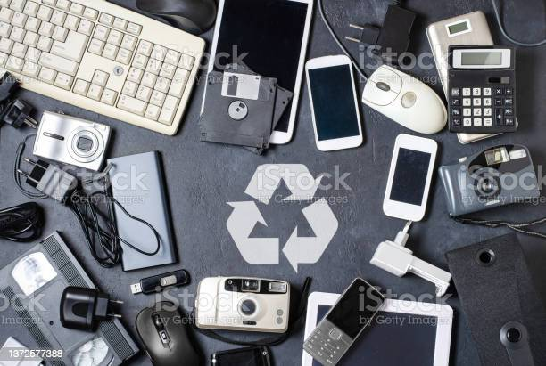
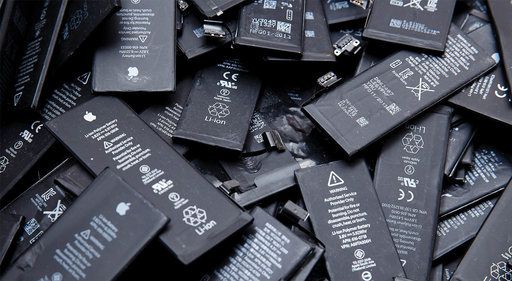
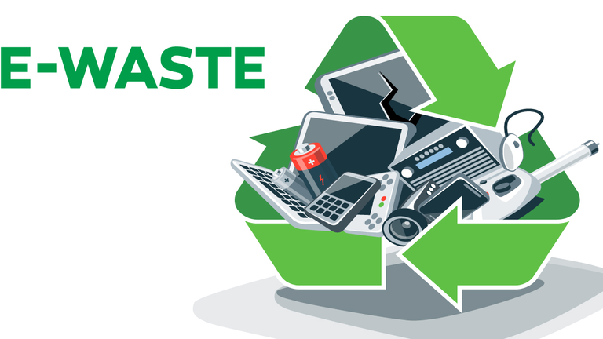
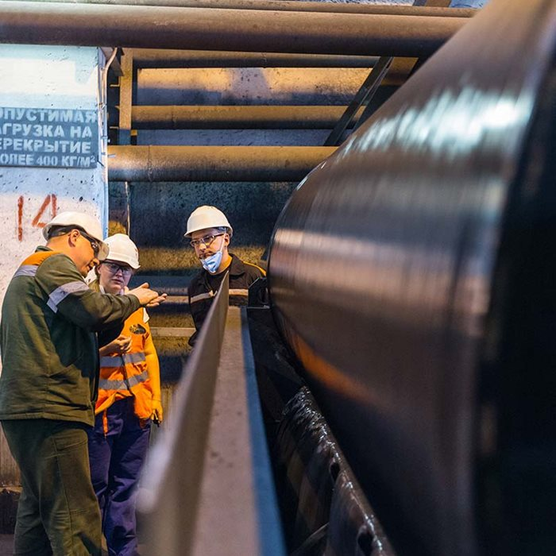
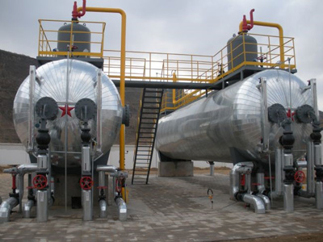
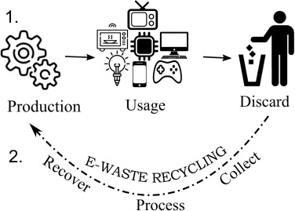

Remine India Private Limited
At Remine India, we are committed to providing eco-friendly solutions for the safe disposal and recycling of electronic waste and lithium batteries.
Our Services
E-Waste Recycling

Electronic waste or e-waste describes discarded electrical or electronic
devices.It is also commonly known as waste electrical and electronic
equipment (WEEE)
or end-of-life (EOL) electronics.
Used electronics which are destined for refurbishment,
reuse, resale, salvage recycling through material recovery,
or disposal are also considered e-waste.
Lithium Battery Recycling

Lithium-ion batteries contain metals such as cobalt, nickel, and manganese, which
are toxic and can contaminate
water supplies and ecosystems if they leach out of landfills. Additionally, fires in
landfills or battery-recycling
facilities have been attributed to inappropriate disposal of lithium-ion batteries
.
How to recycle E-Waste ?

The first step in processing e-waste involves manual sorting to extract specific items, such as batteries and bulbs, for their own processing. During this stage, certain items may be dismantled by hand to recover valuable materials or components for reuse.
After manual sorting, e-waste is shredded into small pieces to facilitate the precise sorting of materials. This is a critical stage of the process since electronics typically consist of various materials that can be separated mechanically when broken down into centimeter-sized pieces.
Magnetic Seperation

The e-waste is shredded and subjected to magnetic separation to extract ferrous metals like iron and steel, while non-ferrous metals are separated using eddy currents. These metals are then sent to specialized recycling facilities for smelting. Other materials, such as circuit boards and metal-embedded plastic, are separated during this stage.
Seperation by Water

After magnetic separation, the remaining solid waste primarily consists of plastic and glass. To further purify the waste and separate different types of plastic, water is used in a subsequent separation step. Obvious contaminants are also hand-sorted during this process.
Recovery

Once separated, the materials are readied for reuse and sale. Certain materials, like plastic or steel, are directed to other recycling streams. However, others can be processed onsite and sold directly, along with usable components extracted during earlier stages of the recycling process.
About Us
Remine India is a recognized startup that specializes in the safe and sustainable recycling of electronic waste and lithium batteries. Our team is composed of experts in the field of waste management, materials science, and engineering, who are dedicated to providing eco-friendly solutions to individuals, businesses, and organizations across the country.
REMINE INDIA PRIVATE LIMITED is a based PRIVATE ltd. Company Registered at dated on Ministry of Corporate Affairs(MCA), The Corporate Identification Number (CIN) of REMINE INDIA PRIVATE LIMITED is U37100UR2022PTC014948 and registration number is U37100UR2022PTC014948 It has been classified as COMPANY LIMITED BY SHARES and is registered under Registrar of Companies ROC-UTTARAKHAND India. Authorized share capital of REMINE INDIA PRIVATE LIMITED is Rs. 1000000 and its paid up capital is Rs. 1000000. It aspire to serve in NA activities across the India.